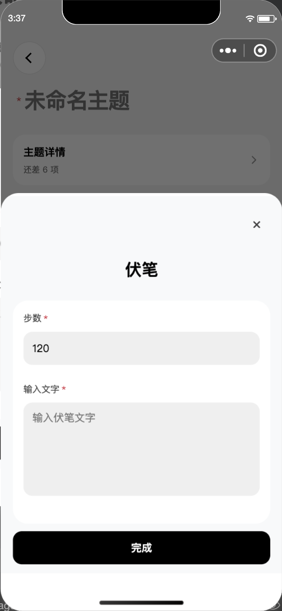
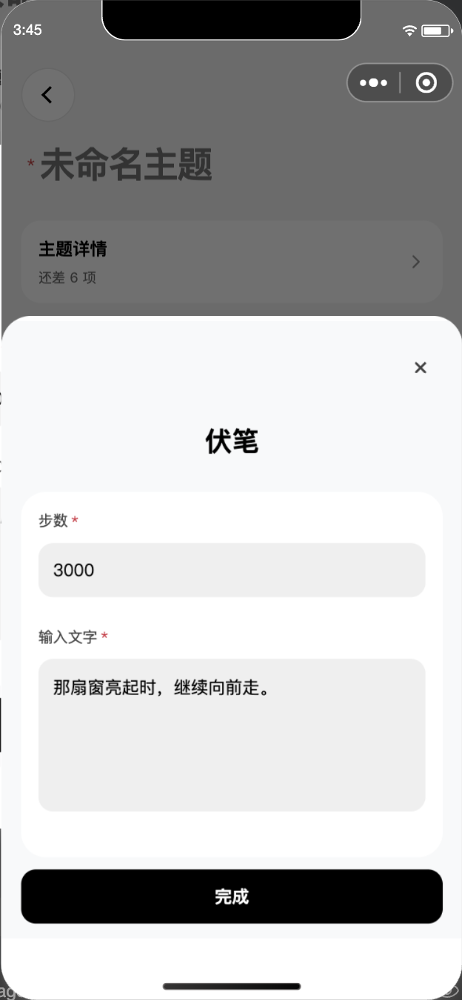
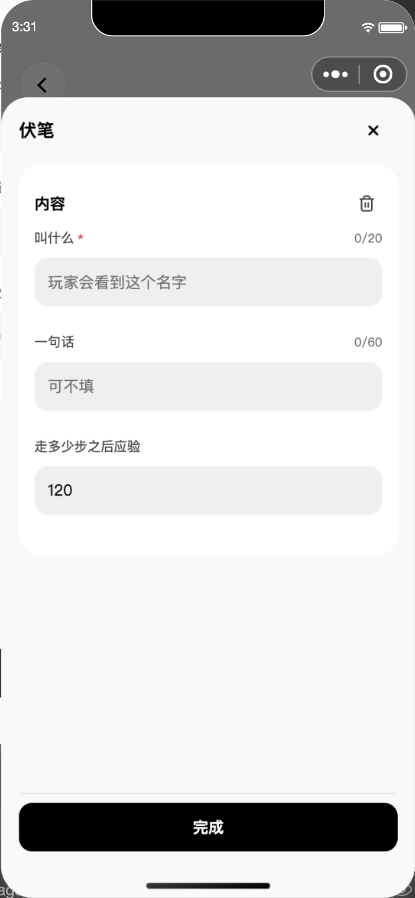
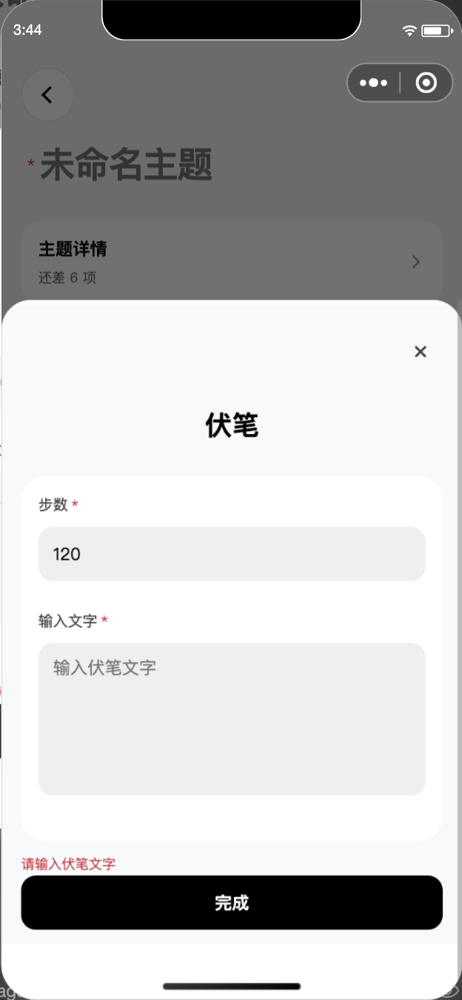

伏笔：步数、文字，两个必填
恢复底部弹窗。步数在上，输入文字在下，选框用灰色填充。没有名称输入、“内容”标题和垃圾桶，底部只有“完成”。只配置一个伏笔。
当前版本


必填与回显已核对
模拟器实际点击“完成”：文字为空时提示“请输入伏笔文字”，步数为空时提示“请输入步数”，弹窗保持打开。两项填好后关闭，重新打开回显同一个伏笔。测试覆盖重复添加、非法步数、关闭放弃本轮修改，以及保留旧资料的引用和条件。
105 项相关检查通过，原生模板与样式编译通过。测试值通过组件输入事件写入，完成按钮使用原生点击；未验证真机键盘。临时页面草稿已恢复为空，没有保存真实主题。
本地修改 7cb08c99e8f303efa2bd74fb9baaa0eadafb6c2e，位于 feature/thought-config-1005。未合并、推送或上传微信。本页只记录伏笔配置验证，完整项目门禁仍有之前记录的遗留问题。
修改前的版本已撤回


最新：主题里的原有伏笔弹窗
伏笔配置仍在编辑主题 → 主题详情。已撤掉误加的正文入口，正文恢复文字、图片、音频、地点。两项必填、底部完成和重开回显已重新核对。